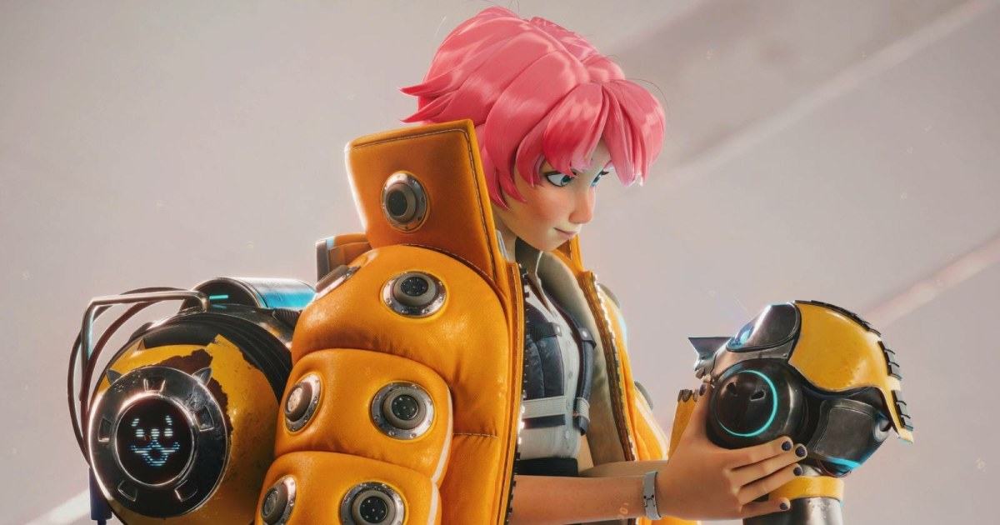

01
CHARACTER / HAIR
SOURCE VISUAL
· Local visual evidence · 點圖開啟原始來源
Source ↗
Stylized Hair：用 Polygon Strip 做出接近 Curve Hair 的輪廓
Maya 新 breakdown 聚焦可控輪廓與遊戲友善的 stylized hair。

Character
★★★★★
完整分析
Character Production
8/29 的新 breakdown 示範用 polygon hair strips 做出接近 curve hair 的視覺，核心是控制輪廓、分束與 shading，而不是增加真實毛髮系統負擔。
對遊戲角色的意義
對 stylized 角色，polygon hair 仍較容易進遊戲引擎、LOD 與手動造型控制；這個方法值得拿來對照 curve/groom 的成本與辨識度。
實測建議
用同一髮型做 polygon strip 與 curve/groom 兩版，比較 silhouette、面數、LOD、材質複雜度與 UE/Unity 匯入後的穩定性。